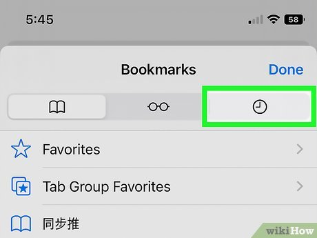

6. Rozpoznawanie zamiast przypominania
EN: Recognition rather than recall. Minimize the user's memory load by making elements, actions, and options visible. The user should not have to remember information from one part of the interface to another. Information required to use the design (e.g. field labels or menu items) should be visible or easily retrievable when needed.
PL: Minimalizuj obciążenie pamięci użytkownika poprzez eksponowanie elementów, akcji i opcji. Użytkownik nie powinien być zmuszony do zapamiętywania informacji z jednej części interfejsu do drugiej. Informacje niezbędne do korzystania z projektu (np. etykiety pól lub elementy menu) powinny być widoczne lub łatwe do odnalezienia w razie potrzeby.
Przykład 1: Strona internetowa (Desktop)
Uzasadnienie: Pasek wyszukiwania z listą "ostatnich wyszukiwań" pozwala użytkownikowi rozpoznać poprzednie zapytania, zamiast zmuszać go do ich dokładnego przypominania sobie z pamięci.
Przykład 2: Aplikacja mobilna

Uzasadnienie: Historia w przeglągarcę Safari